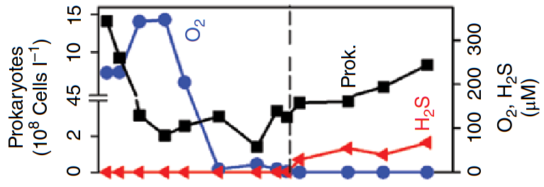

Lauro, Federico M., et al. "The genomic basis of trophic strategy in marine bacteria." Proceedings of the National Academy of Sciences 106.37 (2009): 15527-15533.
Sunagawa, Shinichi, et al. "Structure and function of the global ocean microbiome" Science 348, (2015)

Here black line is curious, does it break twice? Josep M. Gasol and David L. Kirchman, "Microbial Ecology
of the Oceans" Wiley-Blackwell, (2018)